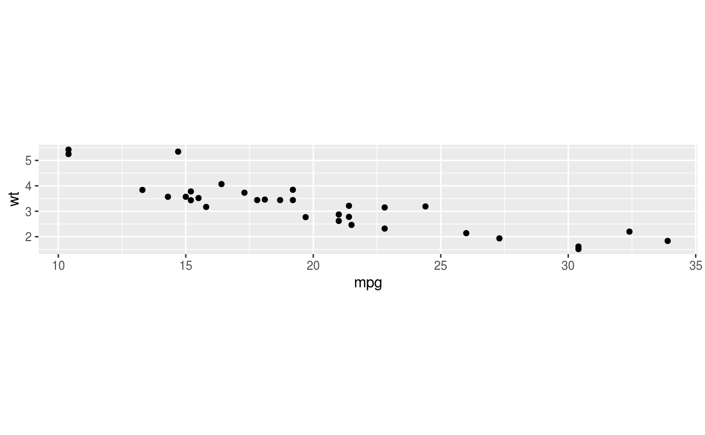
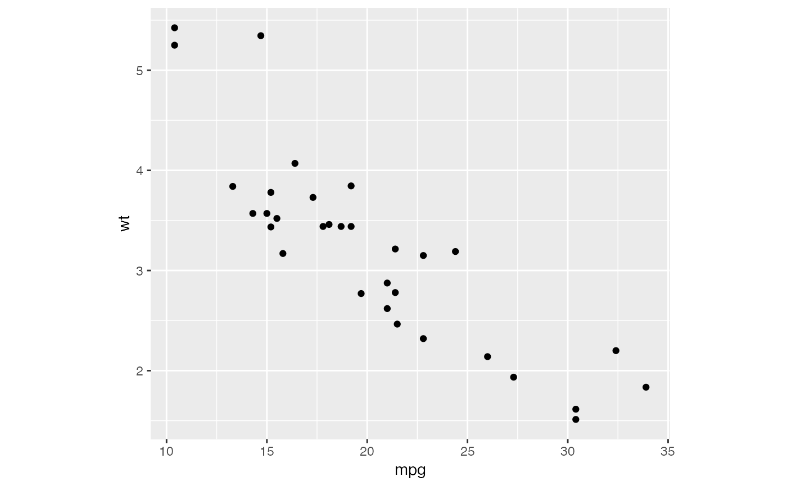
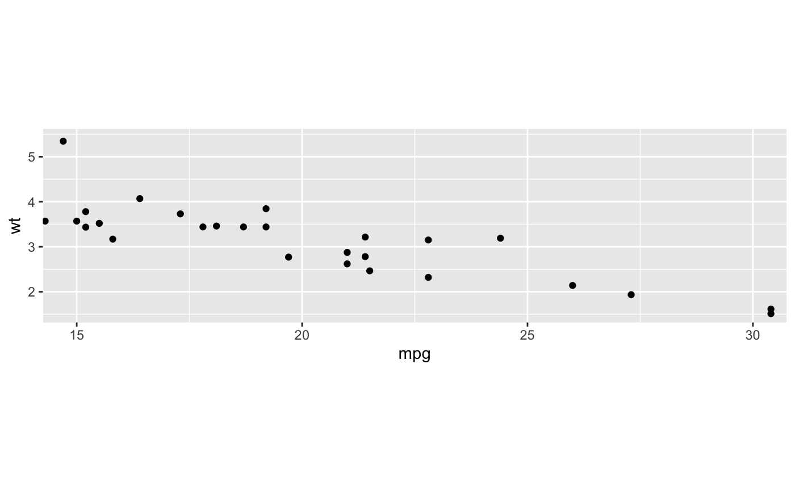

A fixed scale coordinate system forces a specified ratio between the
physical representation of data units on the axes. The ratio represents the
number of units on the y-axis equivalent to one unit on the x-axis. The
default, ratio = 1, ensures that one unit on the x-axis is the same
length as one unit on the y-axis. Ratios higher than one make units on the
y axis longer than units on the x-axis, and vice versa. This is similar to
MASS::eqscplot(), but it works for all types of graphics.
coord_fixed(ratio = 1, xlim = NULL, ylim = NULL, expand = TRUE, clip = "on")
| ratio | aspect ratio, expressed as |
|---|---|
| xlim | Limits for the x and y axes. |
| ylim | Limits for the x and y axes. |
| expand | If |
| clip | Should drawing be clipped to the extent of the plot panel? A
setting of |
# ensures that the ranges of axes are equal to the specified ratio by # adjusting the plot aspect ratio p <- ggplot(mtcars, aes(mpg, wt)) + geom_point() p + coord_fixed(ratio = 1)p + coord_fixed(ratio = 5)p + coord_fixed(ratio = 1/5)# Resize the plot to see that the specified aspect ratio is maintained